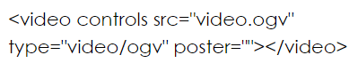

ESTRUCTURA BASICA DE HTML5 ESTRUCTURA BASICA DE HTML5
ESTRUCTURA BASICA DE HTML5 ESTRUCTURA BASICA DE HTML5 Las etiquetas semánticas, a pesar de ser claves para posicionamiento en buscadores y buen desarrollo web, no son la razón por la que todo el mundo habla de HTML5. Video, audio y animación vectorial están en la lista de prioridades y en la boca de todas las personas que evangelizan su uso.
VIDEO:Inserta video sin necesidad de plugins. Es muy fácil usarla, pero cada navegador soporta codecs diferentes de video, lo que hace necesario recodificar un video en múltiples codecs.

AUDIO:Lo mismo que video, pero sin video. Puede usar múltiples formatos, en especial mp3, pero también depende del navegador.

INPUT:ya existía como la etiqueta para insertar cajas de texto y botones. Ahora es más poderosa, con la capacidad de insertar cajas tipo “email” que se autovalidan, calendarios tipo “date”, sliders, números, entre otras.
CANVAS:Un área de dibujo vectorial y de bitmaps con Javascript. Es un API de dibujo entero para Javascript.
SVG:Una etiqueta, igual que img, para insertar dibujos y animaciones vectoriales al estilo de Flash. Todo basado en el estándar abierto SVG (Scalable Vector Graphics), derivado de XML.

Los atributos son la forma que tienen los autores de definir propiedades para un elemento. Estas propiedades habitualmente cambian la forma en que los navegadores interpretan al elemento, al cambiar su significado o presentación.
Por ejemplo, el elemento a inserta un vínculo en el documento, pero el atributo rel indica la relación entre el documento actual (el que contiene al vínculo) y el recurso de destino (al cual el vínculo está apuntando).
Los atributos son declarados indicando su nombre, seguido de un signo igual ("=") y el valor asignado entre comillas. Pero algunos atributos, que solo pueden tomar valores booleanos (verdadero o falso), aplican su valor tan sólo con su presencia.
En estos casos, los atributos pueden ser declarados con sólo indicar su nombre.